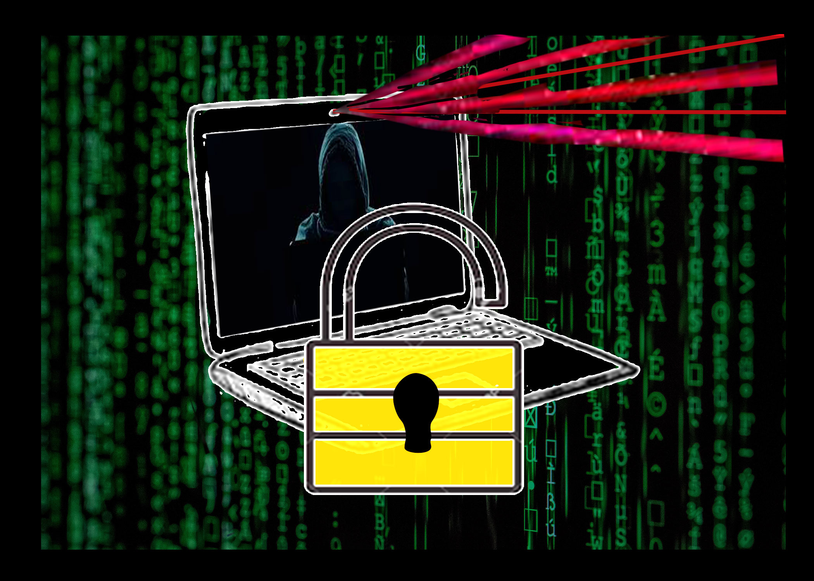

Computer Protection
Abbey Larkin

The Dangers Of The Internet
Image design by Abbey Larkin
Why You Need To Protect Your Computer
Internet privacy is the privacy and security of personal data published within the Internet and different devices. It's a broad spectrum in different terms but in a loose definition: A Secure system for the user's technologies to protect sensitive and private data, communications, and preferences. It's important to keep you and your computer safe. Breach in computer security can lead to Identity theft, hacking, and even the selling of your private information to major companies.
How To Protect Your Computer
There are many ways to protect your computer. Here is the top five!
Use private browsing, if you don't want people to see where your location is, or to even see if you're online there is safe steps you can switch on. For instance you can switch off locations in your general/settings for phones and, for example, Facebook.
Don't use the same password for everything; having multiple passwords for different accounts, and even changing your passwords ever so often will block hackers from finding out your password the easy way.
Be choosy with what you put up on social platforms. Yes, I know you love putting up that saucy tea but almost everything can be traced back to you even after you made a silly post you regret years ago. (Just look at Laura Lee or Jeffree Star).
Secure your hardware, this one is quite easy with thousands and hundreds of apps that are designed for your computer, phone, ect.
Be careful when you buy things online with your credit card, yas Gaga I know James Charles new wig-snatching pallet came out and Jeffree Star's new MorphyxJeffrey Brushes came out just recently, but listen! It's still dangerous to put your credit card information out there, even the last four digits!
Identity Theft:
- Hacking.
- Black mail.
- Other's stealing your identity and pretending to be you
Can ruin your reputation.
Individual Privacy:
- Knowing no one is watching you through your device.
- Knowing you can be comfortable with yourself inside your own computer.
- Knowing noone's is piling evidence against you to blackmail you later in life.
Safety Of The User:
- ISPs Can Sell Your Data
- Net neutrality
- Cookies